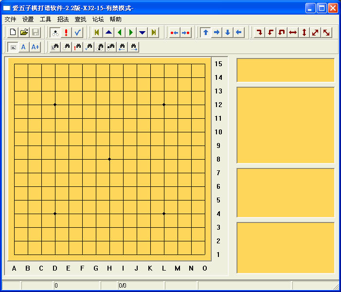
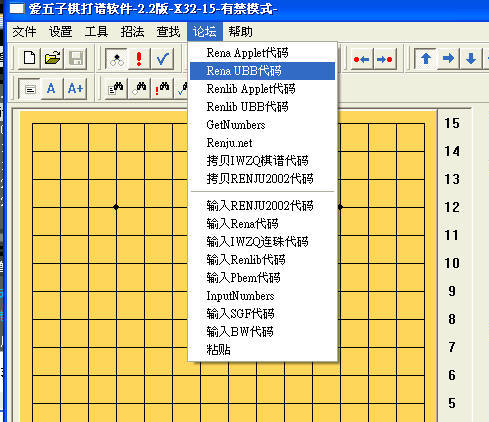
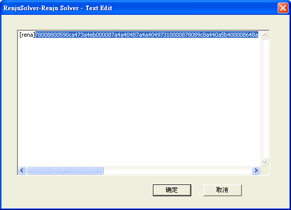
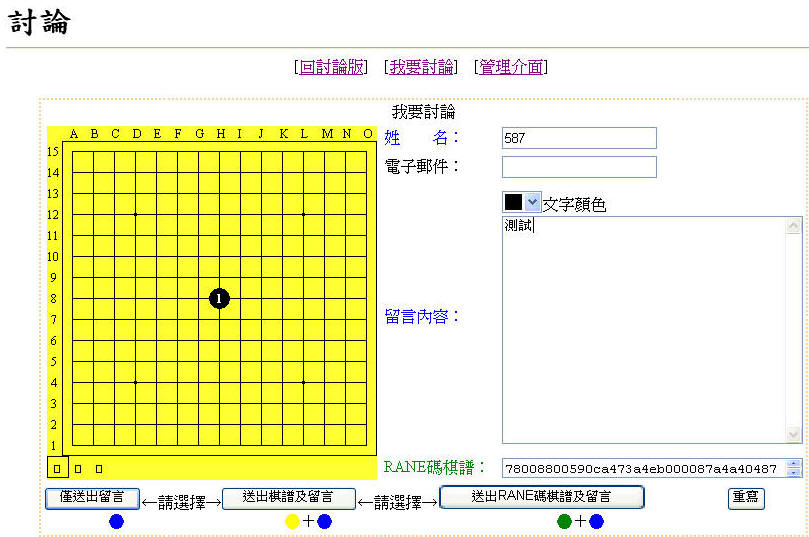
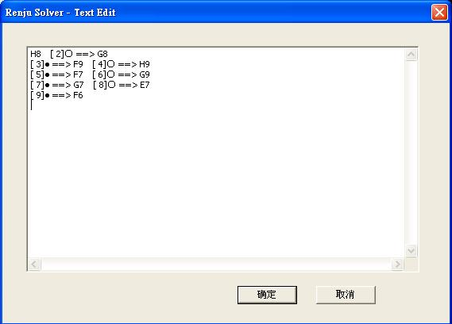

愛五子棋打譜程式2.2
本軟體是由愛五子棋網下載的
http://www.iwzq.com/ShowPost.asp?ThreadID=15963
愛五子棋網的使用說明
http://www.iwzq.com/ShowPost.asp?ThreadID=16011
也可以去本站「下載」找到此軟體
這程式算是連珠終結者拿掉付費功能的版本，介面和Renlib幾乎一樣，但有一些Renlib沒有的棋譜編輯工具，如合併同型，刪除全部的盤面標記或注釋，交換兩子的順序等功能
工具列有A和A+也是輸入標記的工具，和Renlib一樣要按住Ctrl鍵就可以用滑鼠標記
在讀取棋譜速度更較Renlib強大，要開5mb以上的檔案，非他莫屬。

在討論打出分支棋譜
將棋譜輸入完畢後，「按論壇」裡的「Rena UBB代碼」
注意：假設盤面上目前是第３手，代碼只會出現第３手以後的分支及說明

複製出現的代碼

在討論區的RENE碼棋譜中貼上複製的代碼，按「送出RENE碼棋譜及留言」

連珠終結者也有這個功能，不過輸出的棋譜上下會相反
PS：同樣的你可以選「輸入Rena代碼」來抓本站的動態棋譜，代碼可以在網頁原始檔找到，就是通常78開頭40結尾的就是代碼
不知道怎麼看原始檔？如果是用IE，就對該網頁按滑鼠右鍵，選檢視原始檔
抓PTT或其他網站棋譜
PTT棋譜最下面都有棋譜的座標，按「論壇」裡的「輸入IWAQ連珠代碼」，把座標像如下方圖片貼上，按確定就可以了，它只認座標，不是座標的部份他會自己忽視
其他網站如Renjunet的動態譜，一樣從網頁原始檔裡面就可找到座標
